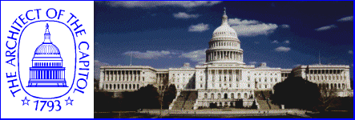

<html><head><title>The United States Capitol</title></head>
<frameset cols="*,150">
<frame name="frame1" src="pages/home_fr.htm">
<frame name="frame2" src="pages/menulist.htm">

<noframes>
<BODY><H1>The United States Capitol</H1>

<hr>
<p>An information resource developed and maintained by the Architect of the
Capitol.</P>
<P><STRONG>Welcome to the United States Capitol Home
Page!</STRONG> 
The Capitol is one of the most widely recognized buildings in the world.
 It is a symbol of the American people and their government, the meeting
place of the nation's legislature, an art and history museum, and a
tourist attraction visited by millions every year.  The information here
is presented by the Architect of the Capitol for everyone who wants to
learn more about the Capitol and what it means.</P>
<UL><LI>The United States Capitol--The Capitol's <a
href="pages/histpage.htm">construction history</a>, its <a
href="pages/roompage.htm">architectural features and historic spaces</a>, its <a
href="pages/aoc_page.htm">architects</a>,
and
the<a href="pages/gndspage.htm">Capitol
Grounds</a>.</LI>
<LI><a href="pages/art_page.htm">Works of
art</a> at the Capitol.</LI>
<li><a href="pages/usbgpage.htm">The U.S. Botanic
Garden</a>--Information
about the Garden's <a href="usbg/overview.htm">history and functions</a> and a list
of <a href="usbg/show9697.htm">flower shows and other events for 1997</a>.</li>
<li><a href="pages/currpage.htm">Current and recent
projects</a> at the
Capitol.</li>
<LI><a href="pages/infopage.htm">For Further Information</a>--A brief <a
href="info/bibliog.htm">bibliography</a>, answers to frequently asked questions <a
href="info/faqs.htm">(FAQs)</a>, <!--information about <a
href="info/hours.htm">visiting the Capitol</a>, -->and links to other resources.</LI>
<LI>A summary of <a href="pages/new_page.htm">what's
new</a> at this
site.</LI></UL>
<P><STRONG>A Note about Graphics:</STRONG> At the moment,
download-time concerns prevent us from offering numerous in-line images.  Most of our
documents contain links to graphics, but be aware that viewing them will take extra time;
file sizes are specified in the text.  <em>Please note that images from the records of the
Architect of the Capitol may be used for educational or scholarly purposes
only.</em></P>
<P><STRONG>Status:</STRONG> This information resource is being
implemented in phases, and new files will be added from time to time.  The information
presented will be updated as required by changing conditions and
new research. It is offered in good faith, and every effort has been
made to ensure its accuracy.</P>
<p> If your browser supports forms, please take a moment
to complete our <a
href="pages/formpage.htm">visitor survey form</a>.  Otherwise, send comments or
suggestions regarding this site to <em>feedback@aoc.gov</em>.</p>
<HR>
<P><strong>Architect of the Capitol, Office of the Curator</strong></P>
<P>This page revised April 17, 1997</P>
<P><CODE>URL: http://www.aoc.gov/homepage.htm</CODE></P>

</noframes>
</frameset>
</html><!-- www.attrition.org web hack mirror - watermark or something -->
